Join worlds
Browse WorldsHub worlds, press Connect, and point Minecraft at localhost:25565. That is it.

WorldsHub macOSA free, unofficial macOS client for WorldsHub. Join and host peer-to-peer Minecraft worlds without port forwarding — no Windows required.
What it does
Browse WorldsHub worlds, press Connect, and point Minecraft at localhost:25565. That is it.
Install a Minecraft server from the app, start it, and press Host. Share an invite code with your friends.
WebRTC tunnels through NAT automatically. Just allow the macOS local-network prompt and play.
Get started
Grab the latest release, unzip it, and drag WorldsHub.app into /Applications.
Open the app and sign in with your WorldsHub account. First launch may need right-click → Open.
Connect to a world, or install Java 17+ and a Minecraft server, then press Host. Play at localhost:25565.
Ready?
Needs an existing WorldsHub account and Minecraft Java Edition.